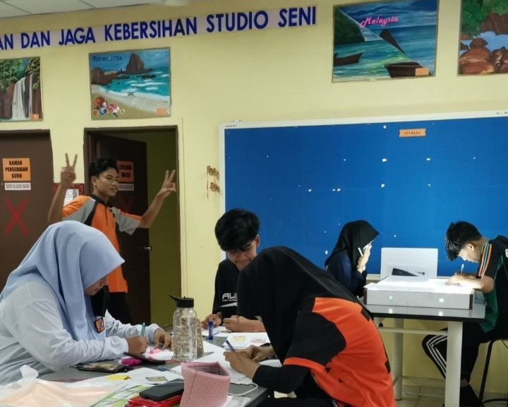

An incredible, wonderful experience

- Story: At this time, I am 18. My friends and I will be sitting for the SPM examination shortly, and I am working very hard to finish the art homework. This coursework will help me achieve greater grades on my forthcoming drawing exam. And, with high aspirations, I was able to earn an A in the visual arts topic on the day the results were published. I am really glad and satisfied because art is significant and valuable to me because it allows me to communicate my strengths as well as my emotions through the drawings I create. Why did I chose this specific moment for my experience? This is because I only realized it today, as my buddies and I were working hard to do our coursework. I realized that was the last time I held a brush and painted. I could paint anytime I chose using my skilled skills. But the feeling is no longer the same, where I, my teacher, and my friends are having fun while working hard to accomplish our tasks and our teacher is always available to assist with whatever is needed.
- Emotion: If I could go back in time, I would pick to be with them.